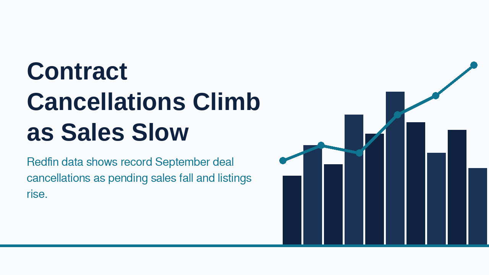
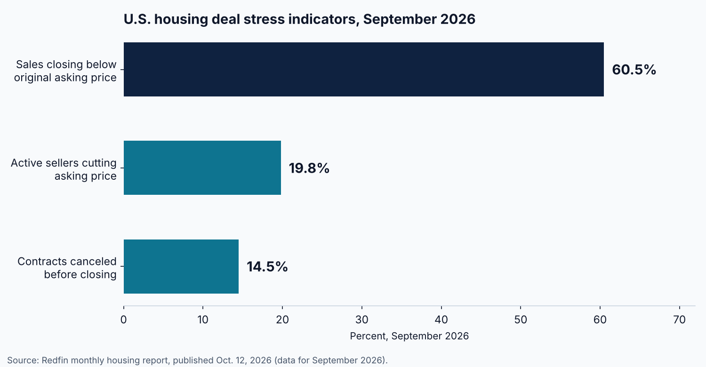

Contract Cancellations Reach 14.5% as Pending Sales Post the Largest Monthly Drop in Three Years

Redfin reported on October 12, 2026 that pending home sales fell 4% from August to September on a seasonally adjusted basis, the largest monthly decline in more than three years. The same report found that 14.5% of homebuying contracts signed in September were canceled, the highest share since the start of the pandemic and, excluding March and April 2020, the highest on record. Mortgage costs are the backdrop: Redfin put the weekly average 30-year rate at 7.28% at the end of September, the highest in three years, and Trading Economics shows 7.40% as of October 8.
Demand is weakening, yet supply is not tightening. Redfin reports that total active listings rose 1.2% from August to their highest level since March 2020, while new listings rose 0.3%. Sellers are adjusting: 19.8% of active sellers cut their asking price in September, and the share cutting prices rose in 43 of the 50 most populous metros. Some 60.5% of September sales closed below the original asking price, continuing an 18-month streak of roughly three in five. The median U.S. sale price was $393,895, up 1.3% from a year earlier, the smallest annual gain since February.

The pace of transactions tells a similar story. In Redfin's four weeks ending September 13, the median home spent 46 days on the market, unchanged from a year earlier, and the average sale-to-list price ratio was 98.6%. Only 29.5% of homes went off the market within two weeks. A second measure points the same way: the National Association of Realtors reported on September 17 that its August Pending Home Sales Index rose 0.3% from July but sat 4.7% below August 2025, with contract signings running roughly 30% below pre-pandemic years according to NAR chief economist Lawrence Yun.
For investors and lenders, the cancellation figure matters as much as the headline sales count. A signed contract is no longer a reliable proxy for a closing. Deals fall through when financing terms shift between contract and closing, when appraisals or inspections reopen negotiations, or when a buyer's debt service coverage no longer works at a higher rate. With rates moving up for seven consecutive weeks, a deal underwritten at contract can look different by the closing date.
The September data describes a market in which buyers have more negotiating room, sellers are conceding on price, and contracts are less certain to close. Investors who re-run their numbers at each stage of a transaction, rather than only at offer, are better placed to decide whether to hold a contract, renegotiate, or walk away.